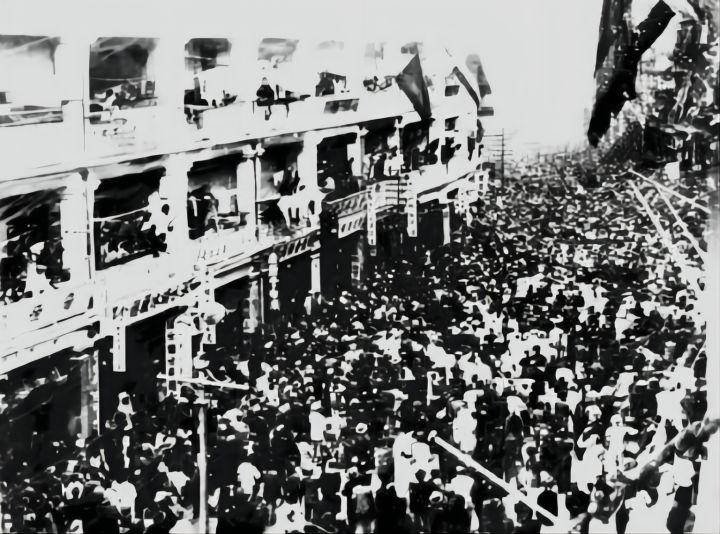

与舒适决裂
无产阶级的胜利和小资产阶级的幸福舒适是不兼容的。因此，我将与舒适决裂。
这道理本身是不言自明的：在资本主义的框架下，一个人的幸福和舒适就意味着另一个人的痛苦和不幸。这道理本身是不可避免的，无可驳辩的：资本主义的所谓“零和游戏”代表了压迫和剥削是世界上唯一的幸福标准。如果没有压迫，没有剥削，那么就没有资本主义的富裕。没有资本主义的富裕，也就没有小资产阶级的幸福。工业革命前上层阶级的幸福建立在农民和手工业者的痛苦之上；十八世纪英国上层的幸福建立在本国和外国劳工和奴隶的痛苦上；十九世纪各大帝国主义的幸福建立在工人阶级的血汗上；二十世纪资本主义国家的幸福建立在被新自由主义鞭挞的发展中国家及发达国家工人上；而二十一世纪的今天，我们的幸福建立在发展中国家的68多亿人的无尽痛苦和炼狱般的生活上。
在这样的框架下，每一天的放松和享受都是罪孽，无异于吃人血馒头；在这样的框架下，每一天的松懈和玩乐都相当于充当了刽子手，将无产阶级人民的头颅砍掉，还要敲骨吸髓地吃掉他们的脑浆；在这样的框架下，多一天不反抗，我们手上的人民的鲜血就更多，更浓。
因此，在意识到资本主义社会的问题后不全力反对而想着保全自己是自私的。意识到资本主义社会的压迫后不去解放劳工而是想着保证自己的工资和奢侈生活是可耻的。我们除了反抗，其他的选择都失去了其意义和正当性。
或许反抗很恐怖。对于我们而言，生活已经很舒适了。劳动人民的伟大工作将我们的社会改造成了前所未有的发达状态。在这种舒适的环境中反抗，无异于是从绵软舒服的婴儿床内一下跃入冒着滚烫熔岩的万丈深渊。然而，我们不得不反抗。这舒服的婴儿床并不是用棉花，而是劳动人民的血肉打成的；这滚烫的深渊固然可怕，但若能穿过深渊，我们将创造一个更美好的世界。因此，我们必须告别资本主义和小资产阶级的舒适，我们必须告别我们社会地位给我们带来的便利，而去自我牺牲，转而进行不畏强权的共产主义革命。如果我们被资本主义的舒适环境欺骗了，被资本主义的枪炮吓到了，人类便无法进步，社会将止步不前。而工人也将就此永远蹉跎受苦。同是无产者，无论眼前的利益多么诱人，我们都必须放眼未来，从宏观的角度考虑问题。共产主义革命是必须要发生的，而没有我们每个人的竭尽全力的努力，没有每一个人的毫无畏惧的奋斗，没有每一个人毫无留恋地抛弃掉资产阶级发射给我们的糖衣炮弹，我们是不可能创造一个新的，进步的共产主义社会的。
因此，我与舒适决裂。
-2022.11.21, Rothesay NB, Tony Su
Art Credit: 龙彦
Click Me For Document Download as .docx File